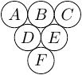
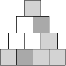
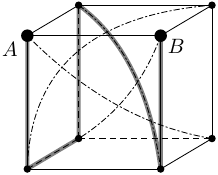

Diskrétní matematika
3. cvičení – 15.10.2026
Na domácí úkol je úloha 6. Termín je 22.10.
Úloha 1. Káťa se rozhoduje, jak se oblékne do sportovního klubu. Musí si vzít jedno tričko, jedny kraťasy, jedny ponožky a jedny tenisky. K tomu si může (ale nemusí) dát do vlasů jednu mašli. V šatníku má bílé, žluté, zelené, modré a červené tričko; bílé, černé a šedé kraťasy a mašle; bílé, červené a oranžové ponožky; a konečně bílé a černé tenisky. Káťa si bílé ponožky vezme jedině tehdy, když je celý její outfit bílý (včetně mašle, pokud si ji bere). Kolika různými způsoby se může obléknout?
Poznámka: Káťa si nechce oblékat dvě ponožky různých barev ani obouvat dvě různě barevné tenisky.
Úloha 2. Digitální hodiny ukazují čas od 00:00 do 23:59. Kolikrát během jednoho dne jsou na displeji právě čtyři z pěti číslic 1, 2, 3, 4, 5 (v libovolném pořadí)?
Úloha 3. Naty má tři různé šestistěnné kostky: červenou, modrou a žlutou. Jejich stěny jsou klasicky označené čísly od 1 do 6. Naty hodila všemi kostkami najednou a sečetla čísla, která jí padla. Kolika různými způsoby mohla dohromady hodit 8?
Úloha 4. Na obrázku je znázorněn hrozen vína. Bobuli z hroznu lze sníst pouze tehdy, pokud již byly snězeny všechny bobule přímo pod ní (tedy jedna nebo dvě bobule, kterých se dotýká spodkem). Například bobuli D je nutné sníst dříve než bobule A a B. Kolika různými způsoby lze takto sníst celý hrozen?

Úloha 5. Při komunikaci s orbitální družicí vybíráme šestici různých kanálů z množiny {1, 2, …, 13}. Rozhodující je pouze samotné složení vybrané šestice – na pořadí, v jakém kanály zvolíme, nezáleží. Abychom dosáhli optimální přenosové rychlosti, musí výběr obsahovat alespoň jednu dvojici kanálů, jejichž čísla se liší o lichou hodnotu. Kolik takových šestic kanálů lze vytvořit?
Úloha 6. Pět matfyzáků si vybírá sedadla na divadelní představení. Všichni chtějí sedět v jedné řadě, která vypadá následovně:
Matfyzáci jsou stydliví, a tak si chtějí vybrat pět sedadel tak, aby – i kdyby byla všechna ostatní sedadla obsazená – mohli svá místa opustit, aniž by kvůli nim museli vstávat cizí lidé. Kolik takových pětiprvkových sad sedadel existuje?
Úloha 7. Starodávnou říši střeží tři magické školy: škola Ohně, škola Vody a škola Země. Každá škola je tvořena dvěma mistry a dvěma učni. Na ochranu říše proti temným čarodějům je potřeba vyslat čtyři dvojice. Ve dvojici bude vždy jeden mistr a jeden učeň, každý z jiné školy. Každá škola vyšle alespoň jednoho mistra a alespoň jednoho učně. Kolika způsoby mohou být tyto dvojice utvořeny?
Poznámka: Záleží na tom, který konkrétní mistr či učeň bude do dvojice vyslán (jedná se o unikátní osoby), nezáleží ale na pořadí daných čtyř dvojic.
Úloha 8. Máme pyramidu výšky 4 a chceme každý z jejích deseti dílků obarvit bíle, šedě nebo černě tak, aby každá dílčí pyramida výšky 2 (orientovaná směrem vzhůru) byla jednobarevná nebo trojbarevná. Kolika způsoby to můžeme udělat? Příklad správného obarvení je na obrázku.

Úloha 9. Klárka vyplnila tabulku 3 × 3 číslicemi 0, 1, …, 9 tak, že každé políčko obsahuje právě jednu číslici, žádná číslice se neopakuje, a navíc, když Klárka sečte čísla v kterémkoli řádku nebo sloupci, vyjde jí buď vždy liché, nebo vždy sudé číslo. Kolika způsoby mohla tabulku vyplnit? Uvádíme příklad tabulky, kde je všech šest součtů sudých:
| 1 | 2 | 3 |
| 5 | 4 | 7 |
| 6 | 0 | 8 |
Úloha 10. Na krychlové planetě jménem Zeměkrychle se nachází osm měst, v každém z jejích vrcholů jedno. Na planetě jsou vybudovány železniční koleje vedoucí po všech hranách krychle, a navíc ještě čtyři železniční tunely vedoucí vnitřkem planety, které spojují města ležící v protilehlých vrcholech. Do města A přijel návštěvník a vyrazil vlakem na cestu po planetě, která skončila v sousedním městě B (vrcholy A a B sdílejí hranu). Jeho trasa se skládala právě z pěti úseků trati a neprocházela žádným městem více než jednou. Navíc vedla alespoň jedním tunelem. Kolik takových tras mezi A a B existuje? Na obrázku vidíte příklad trasy splňující zadání.

Úloha 11. 🌶 Anička má 9000 shodných rovnostranných trojúhelníků. Všechny je bez překryvu uspořádala do tvaru jednoho jediného čtyřúhelníku. Kolik různých čtyřúhelníků takto mohla vytvořit? Shodné čtyřúhelníky považujeme za totožné.
Úloha 12. 🌶 Kuba po nocích vyrábí vánoční světýlka, tedy řetězy s 10 žárovkami, a k dispozici má žluté a modré žárovky. Zařekl se, že se na řetězu nebude vyskytovat žádný úsek čtyř po sobě jdoucích žárovek, ve kterém by se barvy pravidelně střídaly (tedy ani žlutá – modrá – žlutá – modrá, ani naopak). Kolik různých řetězů umí Kuba vyrobit? (Kubovy řetězy mají odlišený začátek a konec.)
Hint 5. Jak by vypadali ty špatné šestice, tedy takové, kde mají čísla každé dvojice kanálů sudý rozdíl?
Hint 7. Právě jedna škola musí vyslat dva mistře a právě jedna škola dva učně. Rozděl podle toho, jestli je to ta stejná škola nebo dvě různé.
Hint 8. Co je nejmenší část pyramidy, že když známe její obarvení, tak se dá zbytek určit jednoznačně?
Hint 9. Zajímají nás jen parity čísel. Řádek má sudý součet, pokud je v něm sudý počet lichých čísel. Kolik musí být lichých čísel a jak se dají rozdělit?
Hint 10. Obarvi města jako šachovnici.
Hint 11. Může to být rovnoběžník nebo lichoběžník. Pak je to teorie čísel.
Hint 12. Zakázat střídavé posloupnosti je to stejné jako zakázat jednobarevné posloupnosti. Pak najdi rekurentní vyjádření.
Úlohy jsou převzaté z Matematického Náboje 2026.